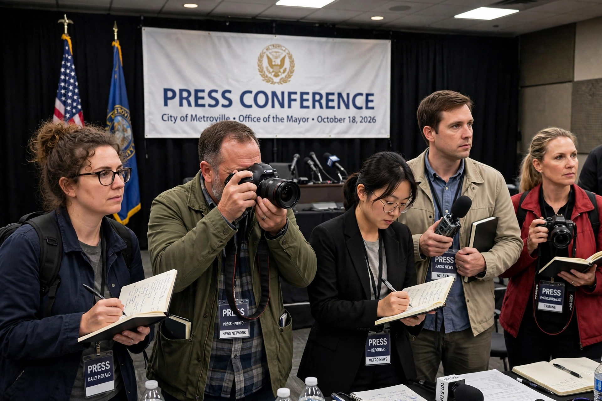

Journalist
From Wikipedia, the free encyclopedia
A journalist is an individual who collects, writes, photographs, processes, edits and presents news and information. Journalists' work is known as journalism. They work for newspapers, magazines, television and radio broadcasters, online news outlets and news agencies, in roles that include reporter, correspondent, columnist, editor, photojournalist, and broadcast presenter.

Roles and work
Journalists gather information through interviews, observation, documents and data, verify it, and present it in forms ranging from short news reports to long-form investigative features and documentaries. Specializations called "beats" include politics, crime, business, science, sport and foreign reporting. Investigative journalists uncover wrongdoing by public and private actors — historically, for example, the Washington Post's reporting on the Watergate scandal, and the cross-border investigations coordinated by the International Consortium of Investigative Journalists that produced the Panama Papers.
Ethics
Professional codes of ethics typically emphasize truth and accuracy, independence, fairness and impartiality, humanity, and accountability. Long-standing debates concern objectivity versus advocacy, the handling of anonymous sources, protection of confidential sources (shield laws in some jurisdictions), conflicts of interest, and practices such as chequebook journalism. In the United States, journalists' work is protected by the First Amendment's guarantee of freedom of the press; courts have declined to impose licensing on journalists, and definitions of "journalist" have been contested as citizen journalism and blogging have expanded who reports news.
Risks
Journalism can be dangerous. Organisations such as the Committee to Protect Journalists and Reporters Without Borders document killings, imprisonments and attacks on journalists each year; war correspondents and reporters covering organized crime and corruption face particular risks, and impunity for murders of journalists remains widespread in a number of countries. The World Press Freedom Index, published annually by Reporters Without Borders, ranks countries according to the environment for journalism.
History
The profession emerged with the growth of newspapers in the 17th and 18th centuries and professionalized in the 19th and 20th centuries with the rise of mass-circulation press, wire services, journalism education, and professional associations. The 21st century brought severe economic disruption to news businesses as advertising moved to digital platforms, alongside new formats such as data journalism, newsletters and podcasts.
See also
- Journalism
- Freedom of the press
- News media
This article is a recreation from memory in the style of Wikipedia.